2.1 Light propagation
Ray model
Light tends to travel in straight lines, which we model as a ray. A ray is just an arrow showing the direction of energy transfer of the wave. Rays don't show the full picture, but they are a convenient way to understand some light phenomena.
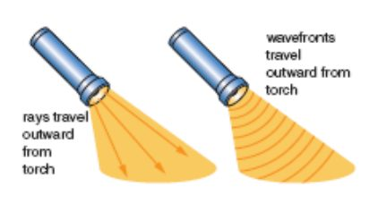
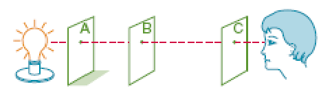
The assumption that light travels in straight lines is fundamental to how we perceive 3D objects. Our eyes compute diverging, converging and parallel rays to build images.
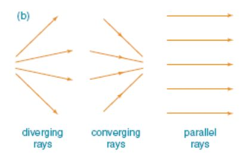
- Almost parallel rays (small angle of divergence) from a distant object let our eye judge that it is far away.
- Diverging rays (large angle of divergence) from a near object let our eye judge that it is close.
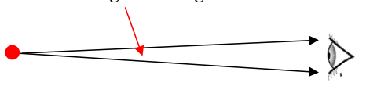
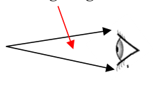
Calculations with the speed of light
Use the approximate speed of light: 300 000 km/s or 300 000 000 m/s, with the speed equation:
Determine the distance from Jupiter to the Earth, if a laser signal takes 48.6 minutes to travel the distance. (Type answers like 8.75e8.)
48.6 min = 48.6 × 60 = 2916 s. d = v × t = 300 000 × 2916 = 8.75 × 108 km.
Determine the time taken for light to travel from CGS to the Melbourne CBD (distance = 10 km).
t = d ÷ v = 10 ÷ 300 000 = 3.3 × 10−5 s.
Reflection, absorption and transmission
Depending on the nature of the boundary, incoming (incident) light can be a mix of reflected, transmitted and absorbed.
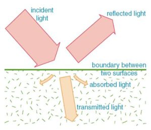
| Description | |
|---|---|
| Specular reflection | Parallel rays are reflected parallel, giving clear images (e.g. a mirror). |
| Diffuse reflection | Parallel rays are reflected in different directions. Objects can be seen, but no clear image forms. |
| Transparent materials | Such as cling wrap or clear plastic, transmit almost all light. |
| Translucent materials | Such as tracing paper, scramble the rays, transmitting most light. |
| Opaque materials | Can reflect some light (giving them colour) but absorb the rest and do not transmit. |
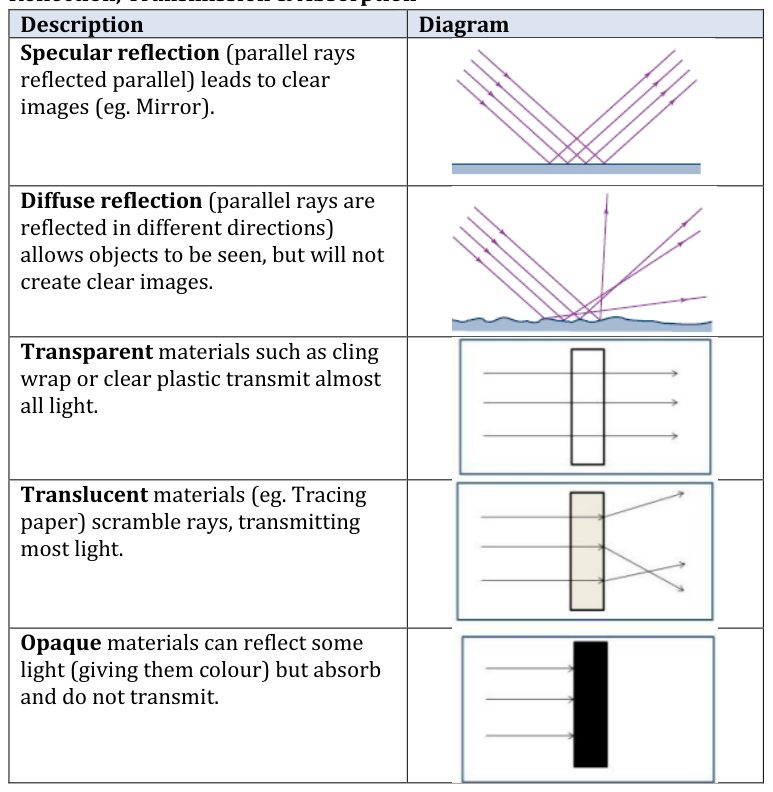
Section 2.1: Key summary questions
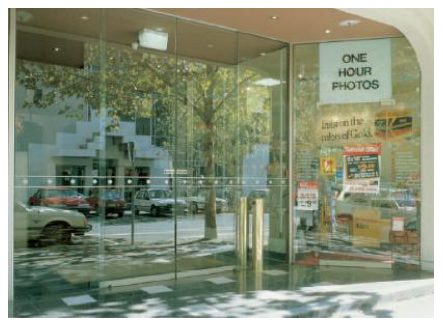
How will light interact with this window? Select all that apply.
The glass is , and it gives reflection.
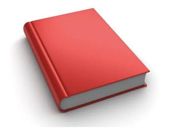
How will light interact with this book? Select all that apply.
The book is , and it gives reflection.
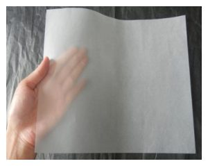
How will light interact with this paper? Select all that apply.
The paper is , and it gives reflection.
A student wants to find the distance from CGS to Eureka Tower using a laser. He sends a signal to the city, where it reflects and returns to a detector. The detector measures 0.000060 s for the total return journey. Calculate the distance from CGS to the city. Use 300 000 km/s.
Total distance = v × t = 300 000 × 0.000060 = 18 km. This is there and back, so CGS to the city = 18 ÷ 2 = 9 km.
2.2 Mirror reflection
Plane mirror reflection
A plane mirror is a flat mirror, like the one in your bathroom. Light reflecting from a mirror obeys the two Laws of Reflection:
The angles of incidence and reflection are measured from an imaginary line perpendicular (90°) to the mirror's surface, called the normal.
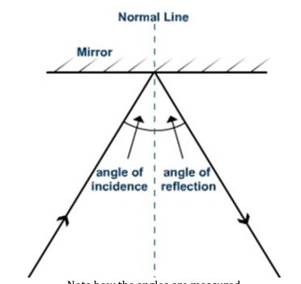
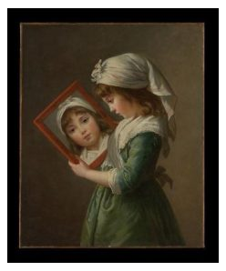
Virtual images
Plane mirrors form virtual images that are the same size but laterally inverted. A flat mirror makes an image of an object by reflecting rays from the object into our eye. Our brain, used to seeing straight-line rays, is "tricked" into thinking the reflected rays came from behind the mirror. So a virtual image forms: no light really comes from behind the mirror, but our brain interprets it that way.
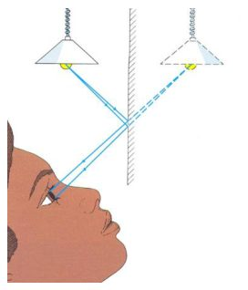
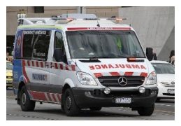
Experiment: plane mirror reflection
Aim: to locate the virtual image formed by a plane mirror, and to find how images are formed and their characteristics.
Materials: plane mirror, pin, small pin board, protractor, plain paper for ray tracing.
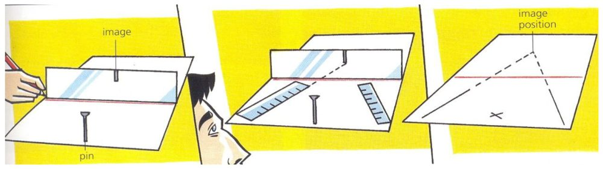
Method: place paper over the pinboard and stand the mirror along the middle of the paper. Rule a line along the back of the mirror (the reflective surface). Place a pin upright in front of the mirror and mark its position. Line up a ruler with the image of the pin in the mirror and trace a line along it (a reflected ray); repeat from one other position. Remove the mirror, pin and ruler, and extend the ruler lines to find where they intersect: this is the position of the image.
Results and analysis: draw the object–image line (from the pin to its image) and compare the object and image distances from the mirror; measure the angle between the mirror and the object–image line; draw the normals where the reflected rays leave the mirror and measure the angles of incidence and reflection.
What results should you find, and how do they support the Laws of Reflection?
The image is the same distance behind the mirror as the pin is in front. The object–image line meets the mirror at 90°. At each point, the angle of incidence equals the angle of reflection, which supports the first Law of Reflection. The image is virtual (the rays only appear to come from behind the mirror), the same size, and laterally inverted.
Conclusion: the image formed by a plane mirror is virtual, upright, the same size as the object, the same distance behind the mirror as the object is in front, and laterally inverted.
Questions
The diagram shows a light box with a single ray pointing at a plane mirror. Describe how you would draw the normal, the angle of incidence and the angle of reflection.
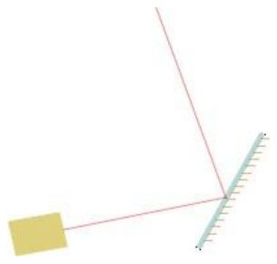
Draw the normal as a dashed line at 90° to the mirror at the point where the ray hits it. The angle of incidence is between the incoming ray and the normal. Draw the reflected ray leaving the mirror on the other side of the normal at the same angle; the angle between the reflected ray and the normal is the angle of reflection.
This is a plan of a room with a mirror on the wall. Using ray tracing and the Laws of Reflection, if you stood in the doorway at X, would you be able to see:
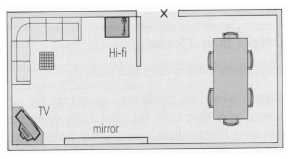
- the television?
- the hi-fi?
A girl stands 10 m in front of a large, flat mirror. How far is she from her image?
Her image is 10 m behind the mirror, so she is 10 + 10 = 20 m from her image.
How far must she walk to be 5 m from her image?
To be 5 m from her image, she must be 2.5 m from the mirror. She walks 10 − 2.5 = 7.5 m towards the mirror.
In the diagram, where would the image of the pencil be?
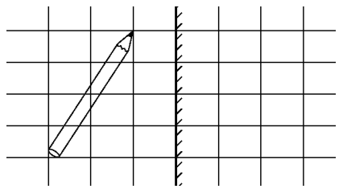
The image is drawn as a mirror reflection of the pencil: each point of the image is the same number of grid squares behind the mirror as the matching point on the pencil is in front, so the image slopes the opposite way (laterally inverted) and is the same size.
Curved mirror reflection
The Laws of Reflection also apply to curved mirrors.
- Concave (converging) mirrors: the reflective surface curves inwards, away from the incident light.
- Convex (diverging) mirrors: the reflective surface bulges towards the incident light.
Parallel rays reflect off a curved mirror as if it were made of a large number of small plane mirrors.
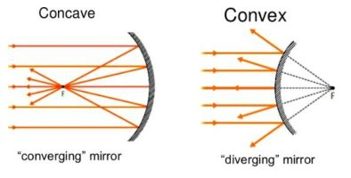
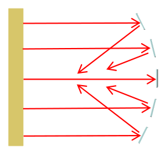
- F = focal point: where parallel light rays pass through after reflection.
- C = centre of curvature: the centre of the circle if the mirror were extended all the way round.
- A convex mirror has a virtual focal point, because the rays only appear to come from that point.
- The distance from the mirror to the focal point is the focal length. As the curvature of the mirror increases (rounder), the focal length decreases.
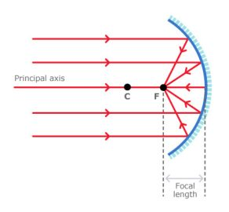
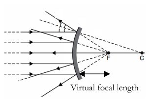
Applications of curved mirrors
- Satellite dishes transmit and receive signals. The feed horn sits at the focal point to capture incoming signals or send signals out (radio waves behave just like visible light).
- Car headlights use concave mirrors to increase the intensity of the beam. The globe is placed at the focal point, so reflected light leaves the mirror parallel.
- Convex mirrors are used in car parks and at sharp corners to give drivers a wider field of view than a plane mirror.
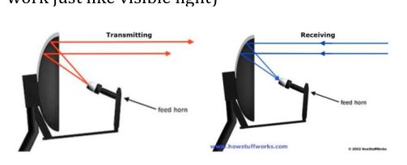
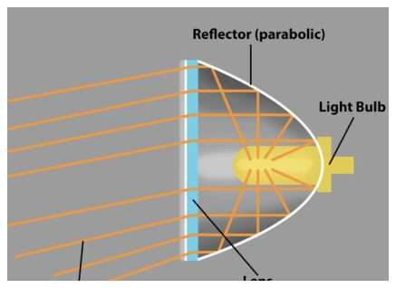
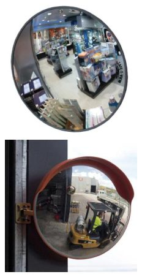
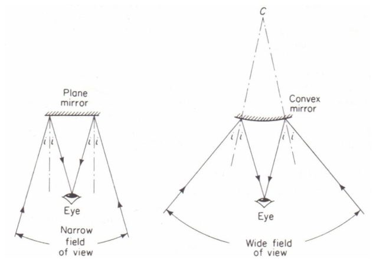
Experiment: curved mirror reflection
Aim: to investigate the behaviour of concave and convex mirrors.
Materials: Hodson Light Box (HLB), AC/DC power supply (12 V DC), three-slit black slide, two curved mirrors of different curvature, paper for ray tracing.
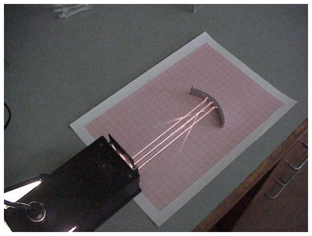
Method: shine three parallel rays from the light box at the concave side of a mirror and trace the path of the rays. Draw the normal for one outer ray and label the angles of incidence and reflection. Repeat for the convex side.
- The three rays reflected from a concave mirror meet at the focal point, so concave mirrors are also called mirrors.
- Rays from a convex mirror appear to come from a virtual focus behind it, so convex mirrors are also called mirrors.
- The more curved a mirror is, the its focal length.
| Convex mirror | Concave mirror | |
|---|---|---|
| Focal point location | ||
| Focal point | ||
| Light ray path | ||
| Law of Reflection |
Section 2.2: Key summary questions
Car headlights use concave mirrors to increase the intensity of the light beam. The globe is placed at the focal point of the mirror. Explain how this intensifies the beam.
Light from the globe spreads out in all directions. The light that travels backwards hits the concave mirror and, because the globe is at the focal point, it is reflected parallel, forwards towards the road. So almost all the light ends up in one parallel beam instead of half of it being lost, which makes the beam much more intense.
Convex mirrors are used in car parks and at sharp corners to increase drivers' field of view. Explain how a convex mirror captures a wider field of view than a plane mirror.
Because the convex mirror's surface curves outwards, light arriving from much wider angles can still be reflected into the driver's eye (each part of the mirror faces a slightly different direction). A plane mirror only reflects light from a narrow range of angles into the eye, so it shows a narrower field of view.
Label the three mirrors: plane, concave or convex.
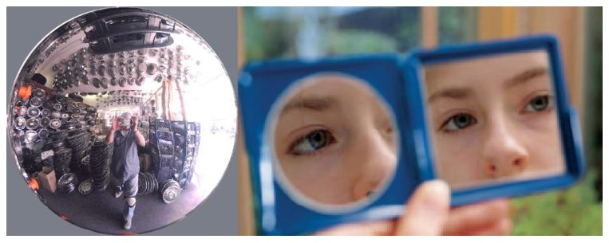
Left: Middle: Right:
The mirror room
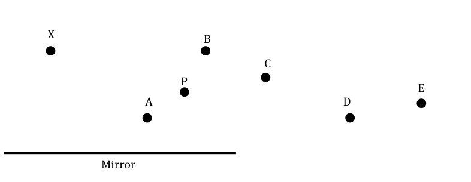
A student stands at point X in front of the plane mirror. Which objects would the student be able to see in the mirror?
Light from A, B and C can reflect off the mirror with equal angles of incidence and reflection and reach X. D and E are too far to the right: their reflected rays would have to hit beyond the end of the mirror.
A puddle forms at P. How would you draw the path of light from P that lets the student see it, and where is the image of the puddle (Q)?
Q is placed the same distance behind the mirror as P is in front, directly opposite P (on a line perpendicular to the mirror). Draw a straight dashed line from Q to X: where it crosses the mirror is where the light reflects. The actual ray goes from P to that point on the mirror and then to X, with equal angles of incidence and reflection.